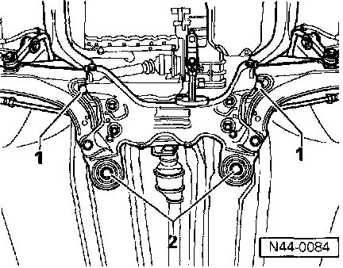

Front Wheel Alignment

Camber cannot be adjusted
If vehicle is out of specification, check trim height and balance if necessary refer to Testing and Inspection.
By adjusting sub-frame it is possible to bring camber within tolerance.
- Loosen bolts -1- and -2-.
- Move sub-frame to equalize camber on both sides.
- Check caster; caster can also change when moving sub-frame.
Note:
Always replace sub-frame bolts (one at a time) when making this type of adjustment.
Tightening torque
Support to body 100 Nm (74 ft lb) + turn 90°
Bolt position -1-
Use new bolts!
Support to body 100 Nm (74 ft lb) + turn 90°
Bolt position -2-
Use new bolts!
Rear wheel camber, adjusting
Camber cannot be adjusted.
If vehicle checks outside of specification, check trim height and adjust if necessary refer to Testing and Inspection.
If specification cannot be obtained, check axle beam for damage and replace if necessary.
Rear wheel toe, adjusting
If vehicle is out of specification, check trim height and balance if necessary refer to Testing and Inspection.
Rear axle total toe is not adjustable
Only by sliding brackets is it possible to balance individual toe values.
If, after attempting above method, vehicle remains out of specification, check axle beam for damage and replace if necessary
- Loosen all bolts at bracket -1-

- Slide bracket -1- laterally.
2 - Rear axle beam
- Tighten bolts 75 Nm (55 ft lb).
Note:
Always use new bolts